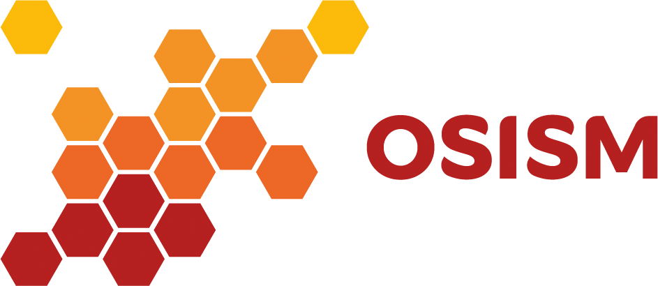

Die von uns betriebene Betacloud stellt als Public Cloud Compute-, Storage- und Netzwerk-Ressourcen für Entwicklungsteams kleiner und mittelständischer Unternehmen zur Verwendung in CI/CD Systemen sowie komplexen Entwicklungs- & Testlandschaften zur Verfügung.

Open Source Infrastructure & Service Manager
Unsere auf Docker und Ansible basierte Deploymentlösung für OpenStack und Ceph namens Open Source Infrastructure & Service Manager, kurz OSISM, setzen wir für den Aufbau maßgeschneiderter Private Clouds jeder Größenordnung bei unseren Kunden ein.